FAQ and how-to guides
How to change the settings, keep play safe and private, and get the most from Chessosaurus, step by step with pictures from the app.
Getting around
Everything starts on the home screen. ⚙ Settings is at the top; Play chess, the Hatchling board, the Dino trail, Dino games and your saved games are below. During a game, the ⚙ button above the board opens a menu with Hint, Save, New game, Stop, Settings and Home.
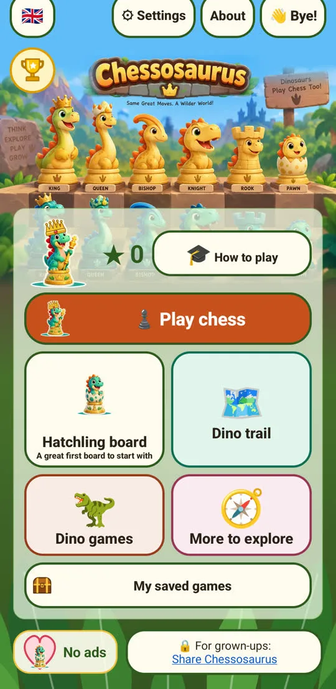
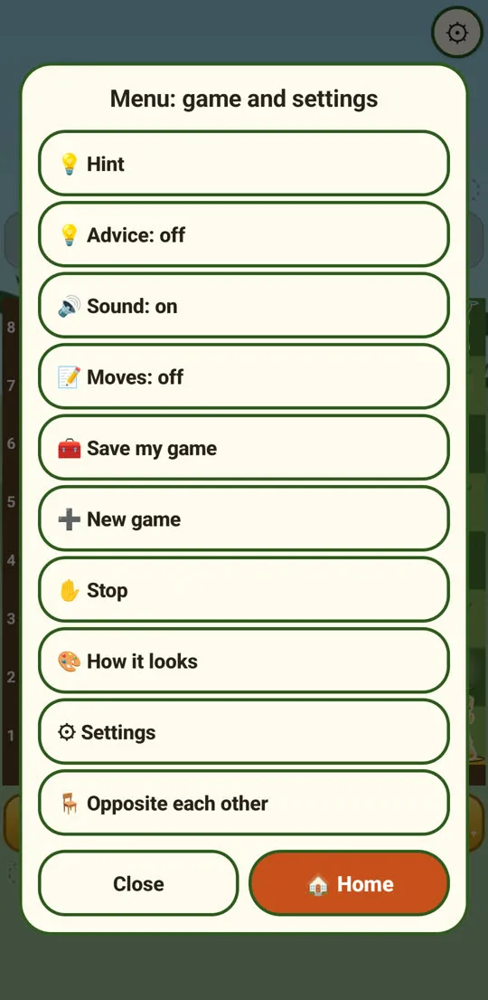
Changing the settings
Tap ⚙ Settings. Each group opens with a tap, and Done takes you straight back to where you were. Settings belong to the dino who is playing, so each child keeps their own.
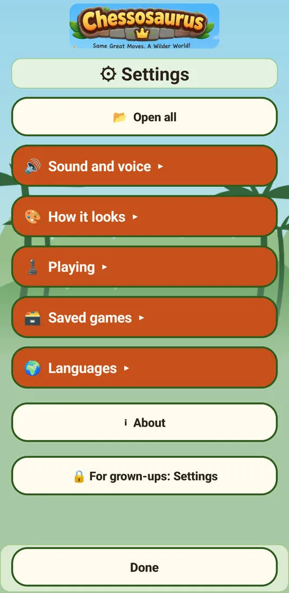
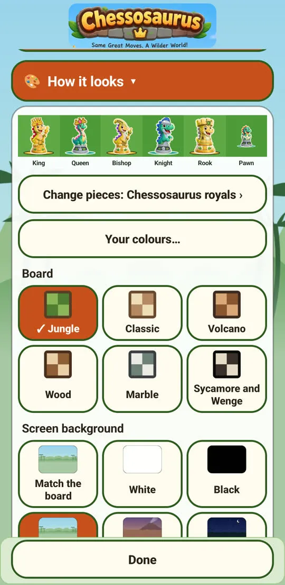
Sound and reading aloud
In Sound and voice you can set the volume, switch vibration off, and have questions and lessons read aloud by Queenie or the T. Rex King. Reading aloud uses a voice already installed on the device and works offline.
Languages
In Languages choose the app’s language and, if you like, a second language. The quiz, lessons and museum cards then show both, each with its own speak button.
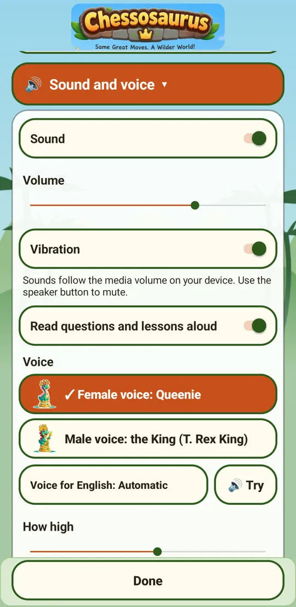
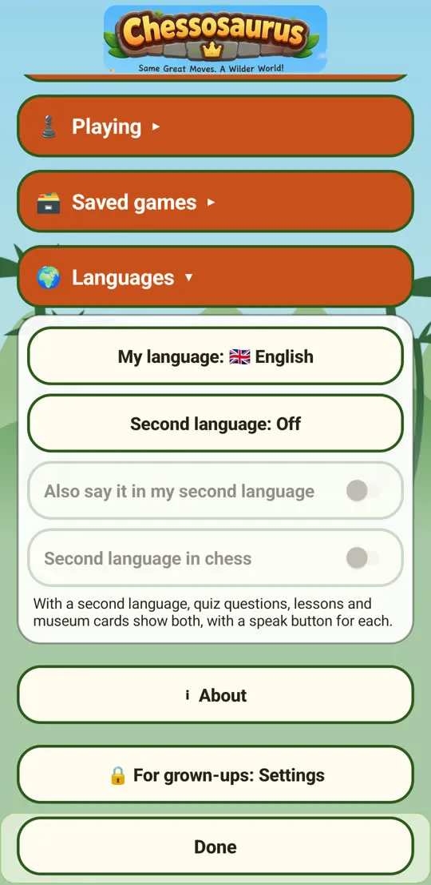
Choosing who to play
Tap Play chess, then choose Me against the computer, Two players on this device or Two devices. Against the computer, pick a dinosaur: from the Baby Dino, who plays almost at random, up to the T. Rex King. The Playing settings also hold the learning quiz between games and the beginner hints.
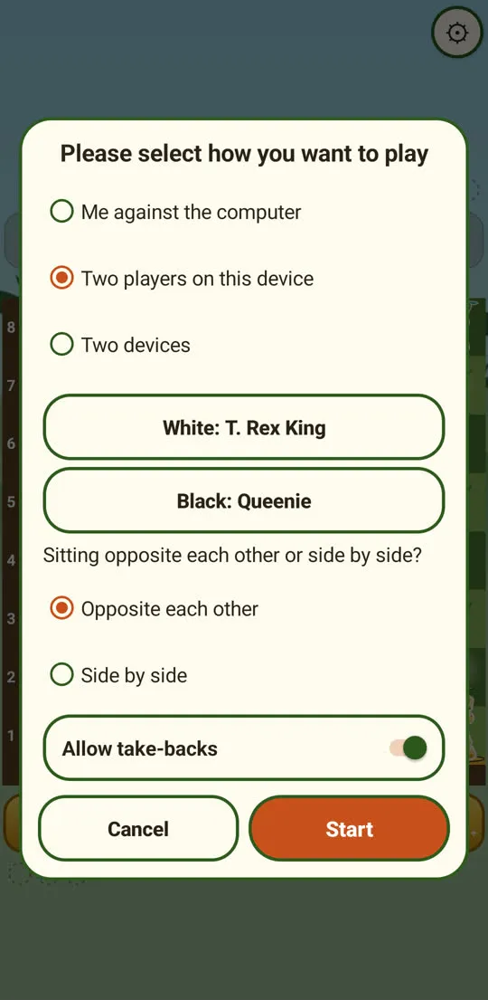
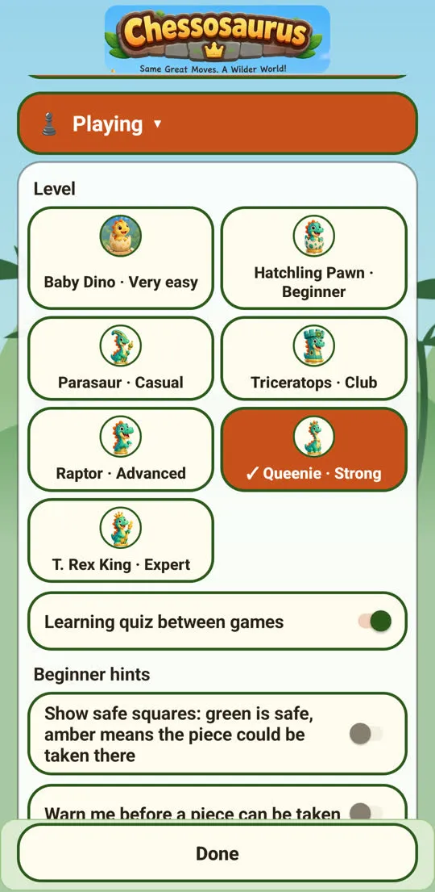
Players: one dino each
Each child picks their favourite dinosaur, and that dino keeps their own stars, board and pieces. Nobody types a name. A dino that a grown-up has given extras to opens only after the grown-up check.
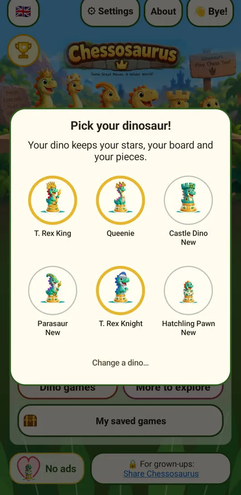
Two players on one device
Choose Two players on this device, then Opposite each other (the board lies flat between two children and the far pieces turn to face the far player) or Side by side. The game menu can switch between the two at any time.

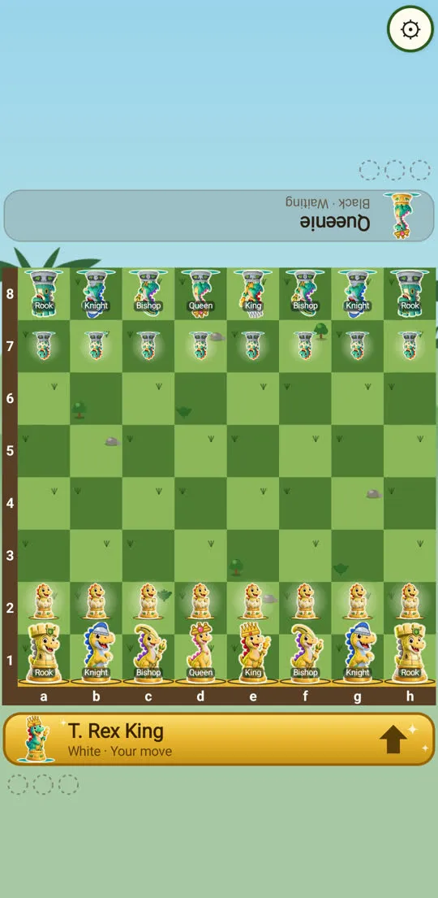
Hint and beginner help
Stuck? Tap Hint and an arrow shows a good move. The child still makes the move. In the Playing settings, beginner hints can show safe squares and warn before a piece can be taken. After a game, “One thing from your game” picks a moment to practise.
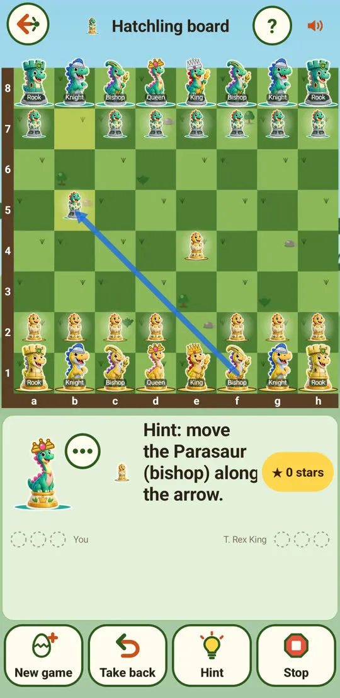
Saving, stopping and finding games
Tap Save my game in the game menu to keep a game. In a two-player game, Stop ends it with no winner and the saved game shows a Stopped badge. Against the computer, Stop counts as a lost game. Open My saved games on the home screen to carry on or look back.
Saved games are files in the device’s Documents › Chessosaurus games folder (Android 10 and later), so you can find them in the Files app. They stay there if the app is removed. Deleting a saved game always asks a grown-up first.
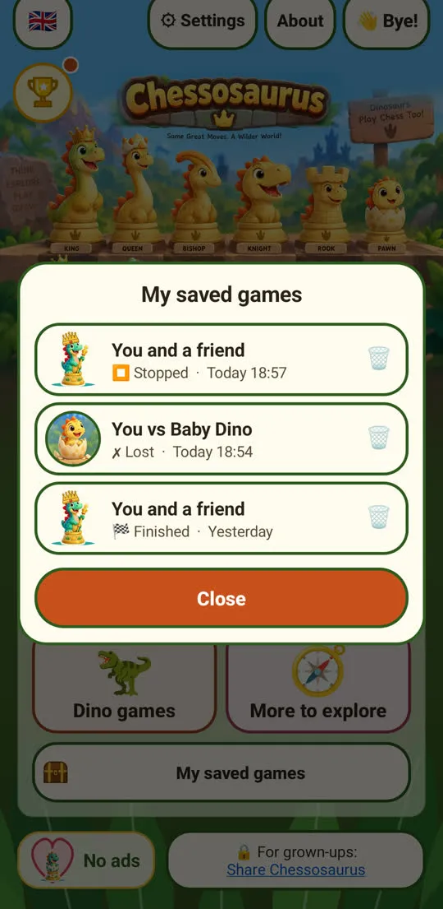
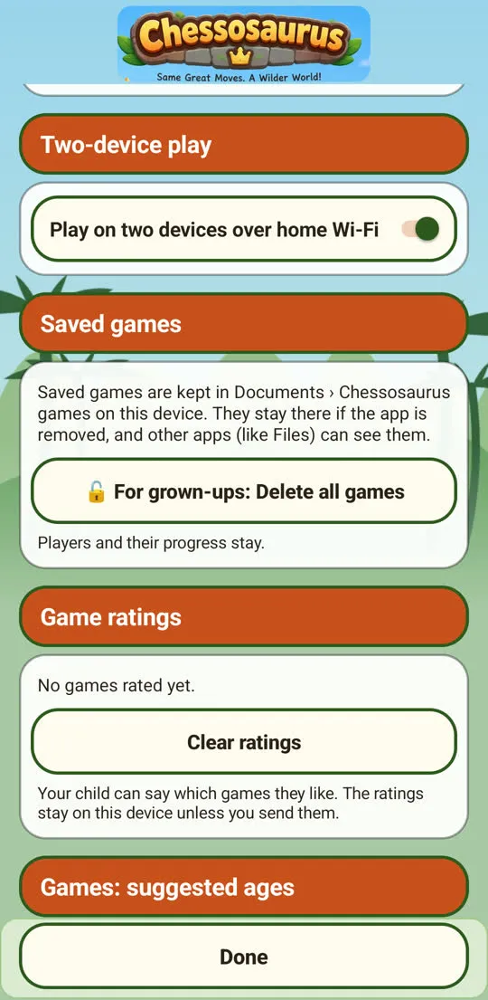
The learning quiz between games
Between games a short dino quiz can appear. Let’s play! skips straight to the game, and the quiz can be switched off in the Playing settings. It never appears between two-player games.
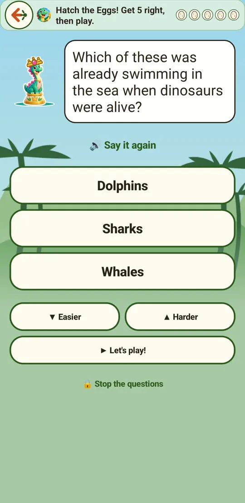
The grown-up check
Anything that could leave the app, change an important setting or delete something asks for a grown-up first: hold the button, then answer a sum (or enter your PIN, below). Every check shows the same line, so children learn what it means: “Thank you. Keeping children safe is our top priority.”
The For grown-ups area, at the bottom of Settings, holds your child’s progress, the PIN, the internet setting, two-device play and saved games.
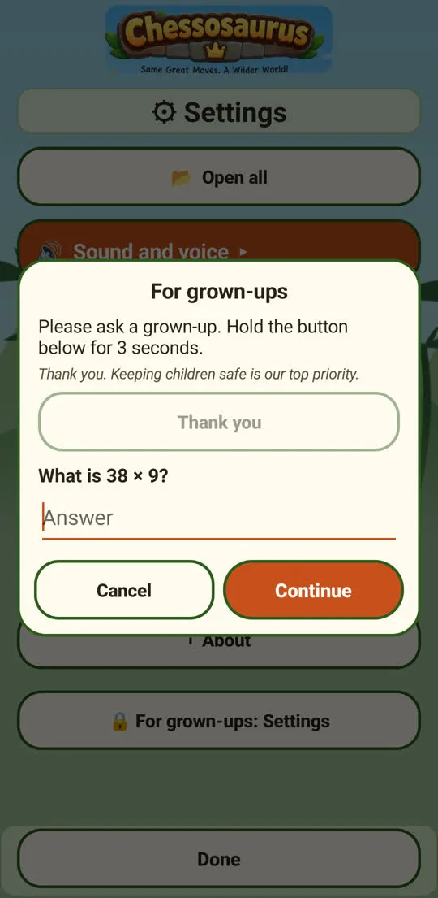
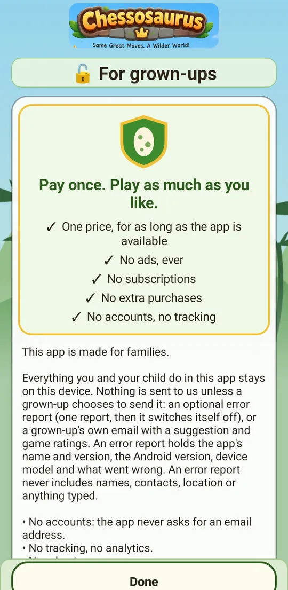
Setting a grown-up PIN
If older children can do the sums, set your own 6-digit PIN: Settings › For grown-ups › Set a PIN. Choose something children won’t guess, then type it again. The PIN stays on this device only. There is no account or email, so we can’t see it or recover it.
Forgotten it? Tap Forgotten your PIN? on the PIN pad. A grown-up can reset it with the device’s own screen lock. On a device with no screen lock, a sum resets it after a 24-hour wait, and the PIN keeps working until then. Only the PIN is cleared; everything else stays.
For your safety, the app hides the PIN pad from screenshots and screen recordings, so it is not pictured here.
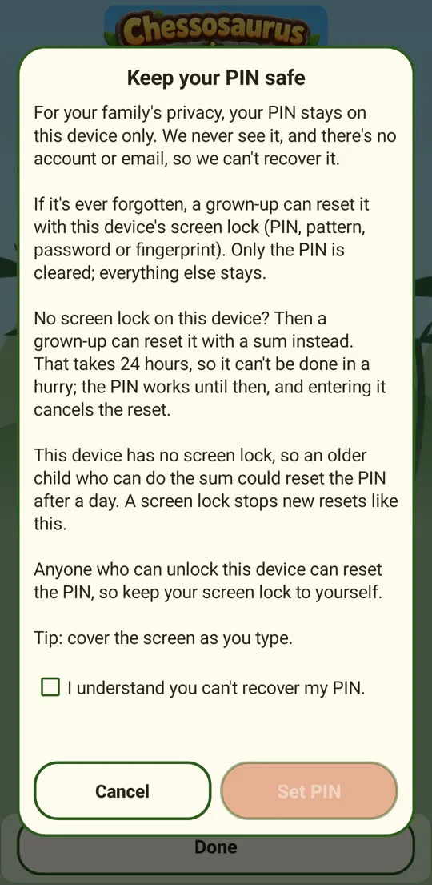
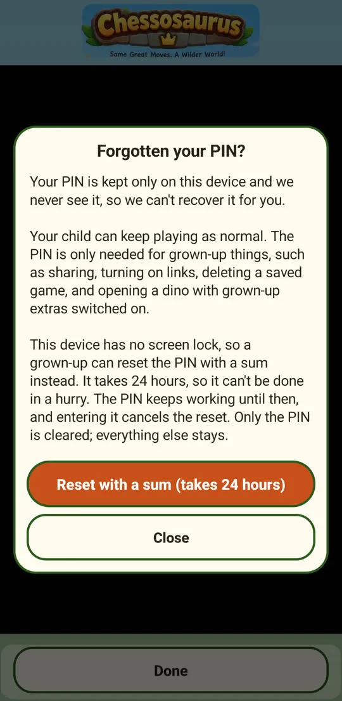
Skipping checks, and what always asks
You can skip the everyday checks for one dino, or for every dino on the device. Before you choose, the app lists what will still ask a grown-up every time: the store, our websites and the privacy policy; sharing; switching on links, the internet or error reports; two-device play; removing a player; deleting a saved game; sending game ratings; and opening a dino with grown-up extras.
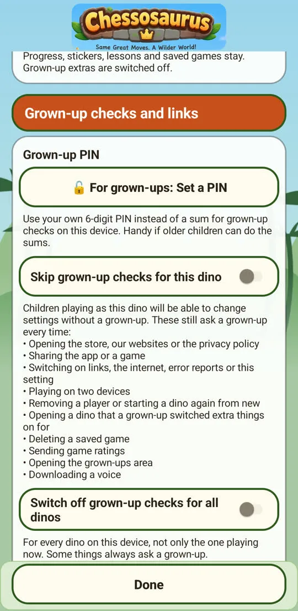
The internet and error reports
The internet setting starts Off, and Chessosaurus works fully without it. A grown-up can turn it on only to send an optional error report: one report goes the next time something goes wrong, then reports switch themselves off again. Nothing else is sent to us.
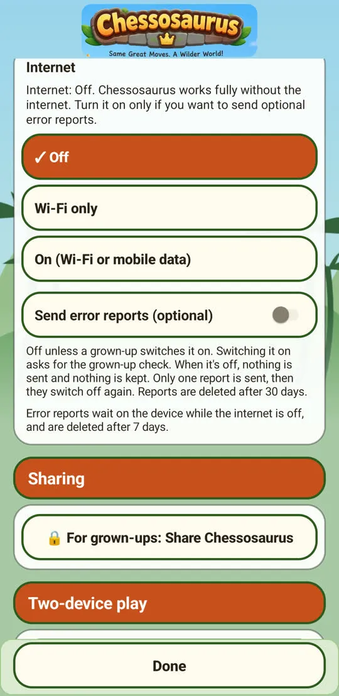
Two-device play and encryption
Two children can play on two devices in the same room, over your home Wi-Fi. A grown-up check comes first, every time. One device shows a code and a grown-up scans it with the other device’s camera. The camera only reads the code: no picture is taken, kept or sent.
- The pairing code is never sent. Both devices prove they know it without it ever crossing the Wi-Fi.
- Every move is encrypted, straight between the two devices. Nothing goes through our servers or the internet.
- There is no chat. Only the moves, and the few messages that keep the game in step, travel.
- You can switch it off in For grown-ups › Two-device play.
Precautions for child and device safety
Chessosaurus is built to be safe on its own, and a few simple steps on the device make it safer still:
- Set a screen lock on the device. It keeps the device private and lets you reset a forgotten grown-up PIN at once.
- Use a grown-up PIN once your child can do the sums, and keep it to yourself.
- Leave the internet setting off unless you want to send an error report.
- Play two-device games only on your own home Wi-Fi, with devices you know, and pair them yourself.
- Use your device’s own parental controls for screen time and app installs (for example Google Family Link on Android, or Amazon Kids on Fire tablets).
- Keep the app up to date from Google Play or the Amazon Appstore, so you have the latest fixes.
- Before passing a device on, delete the saved games in Documents › Chessosaurus games; they stay there after the app is removed.
- Play together at first, in a shared room, and take breaks. There are no streaks or reminders, so stopping costs nothing; the 👋 Bye! button ends a session kindly.
- Keep the volume comfortable, especially with headphones.
More detail is in the grown-ups’ guide and the privacy policy.
Questions? See Help and contact.